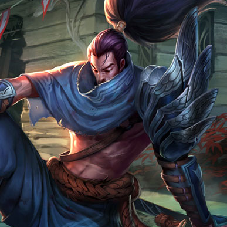

首页
游戏介绍
???
???
???
每日一笑
火爆资讯
精美壁纸
官方活动
关于我们
投稿&&注册
最新强势英雄
提到诺克萨斯力量的象征，没有人能比德莱厄斯这名城邦中最让人畏惧和久经沙场的战士更加适合了。自幼失去双亲的德莱厄斯，为了让他自己和弟弟活下去，不得 不进行战斗。到他加入军队的时候，他已经练就出了如同身经百战的老练士兵一般的力气和纪律性。德莱厄斯决心的首次真正考验，出现在一次对抗德玛西亚的决定 性战斗中。那里的诺克萨斯军队疲惫不堪，且数量处于劣势。德莱厄斯的长官下令，让他的部队撤退，但德莱厄斯拒绝接受如此怯懦的行为。德莱厄斯脱离编队，大 步迈向长官，并用手中的巨斧削掉了这个胆小鬼的脑袋。既惶恐不已又备受鼓舞的士兵们跟着德莱厄斯冲进了战斗，并用难以置信的力气与热情进行战斗。在一场艰 苦漫长的战斗之后，他们终于迎来了胜利的曙光。
更多内容……
诺克萨斯之手
我以荣誉之名前来杀你。即使你毫无荣誉可言，也一样得死。 菲奥娜是瓦洛兰的决斗家中最为可怕的一个，她的名声来自她顽强的意志和高傲的自尊， 以及与这些相称的剑技。她出生在德玛西亚的劳伦特家族，一个曾经显赫的家族，但她父亲的舞弊行为损害了家族的名声。菲奥娜前所未有地对她的父亲发起决斗挑 战，并在获胜后，取得了劳伦特家族的控制权。她公然藐视德玛西亚的规章制度，准备通过一场场的决斗来恢复家族的名声和自豪感。
更多内容……
剑姬

亚索曾是艾欧尼亚某所知名剑术道场的天才学徒，并且还是同辈中唯一能够掌握传说中的御风剑术的学生。大部分人曾相信他注定会成为一位伟大的英雄。但是，因为诺克萨斯的入侵，他的命运被永久地改变了。亚索在那时负责保护一位艾欧尼亚长者，但是，他自大地以为自己的剑能够改变战局，便擅离职守，投身于战场之中。当他回到长者身边时，发现长者已被杀死。
身败名裂的亚索甘愿自首，准备用一生来补偿他的失职之罪。但是，他不单被控告玩忽职守，还被控告谋杀，这让他震惊不已。尽管负罪感让他困惑不已、痛苦不堪，但他知道，如果他不作为的话，真正的刺客就会逍遥法外。亚索拔剑而战，逃出道场，并且他非常清楚，自己又犯下了谋反罪，整个艾欧尼亚都会与他为敌了。他第一次陷入真正的孤独境地，踏上了寻找杀害长老的真凶的人生旅程。
更多内容……
亚索